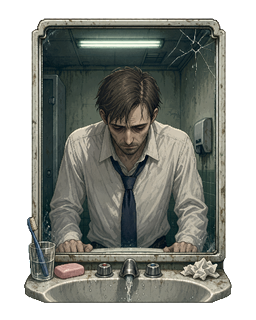
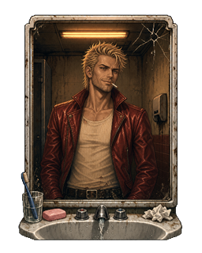

实机模拟 点方块切换；按 1/2/4 切换 1× / 2× / 4× 放大

ACCEPT · idle
这是桌宠跑起来后的实际行为，跟你装上 Python 后双击的效果一致：
- 待机循环 60 帧 @ 每帧
83ms(= 5 秒一圈，12 FPS) - 点击 → 12 帧过场 @ 每帧
50ms(= 0.6 秒，20 FPS) → 切到对端待机 - 过场首尾两帧 (
*_00/*_11) 用的就是 idle 起始帧本身 → 无缝
点方块 → 看 Tyler 出场。再点 → 看 Tyler 退回 Jack。
看不出哪帧是 idle / 哪帧是过场 = 衔接合格。
四个循环并排 同时看，对比两态视觉差 + 过场动力
accept_idle · Jack 洗脸（2s 循环）
bypass_idle · Tyler 抽烟 + 伸手（2s 循环）

trans_to_bypass · Jack → Tyler（0.6s 单次循环演示）
trans_to_accept · Tyler → Jack（0.6s 单次循环演示）
accept_idle · Jack 待机 60 帧（5s 循环 @ 12 FPS） 低头 → 抬头 → 眨眼 → 捧水 → 泼脸 → 滴水
bypass_idle · Tyler 待机 60 帧（5s 循环 @ 12 FPS） 笑 → 歪头 → 点烟 → 抽 → 吐烟越顶 → 笑 → 手越右边 → 收回
trans_to_bypass · Jack 镜中变 Tyler 12 帧（0.6s @ 20 FPS） 抬头 → 头发金 → 半边脸 → 几乎成型 → bookend
trans_to_accept · Tyler 消散回 Jack 12 帧（0.6s @ 20 FPS） 笑垮 → 头发褪色 → 半边脸 → 残留烟雾 → bookend
你的决定
勾一勾过了哪些（v3 等 Codex 出图后用）
三选一
选定后告诉 Claude，他帮你执行。